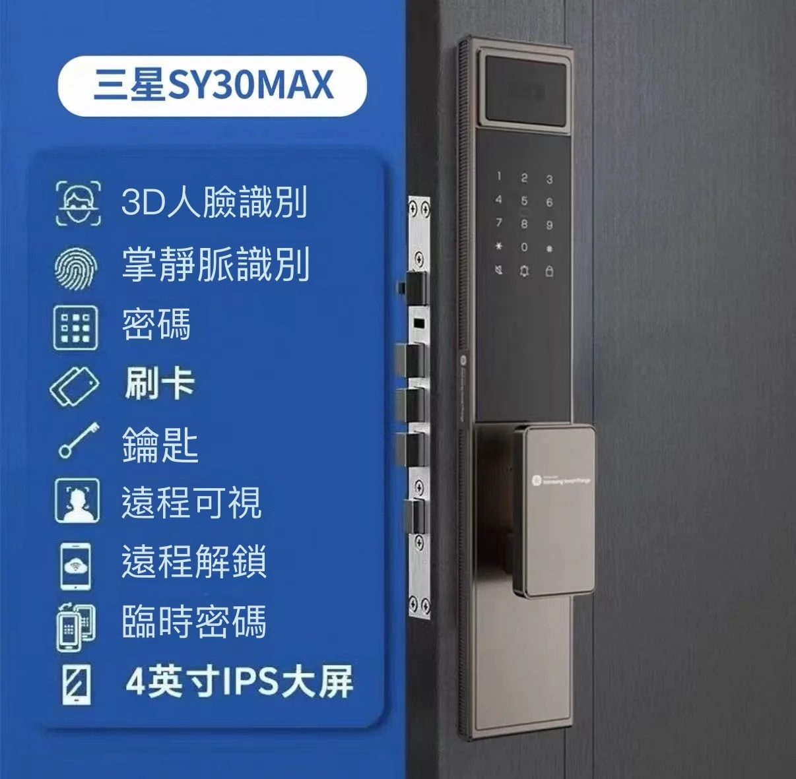
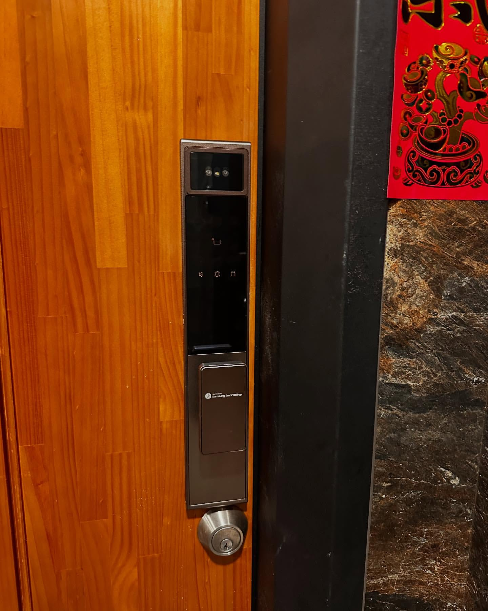
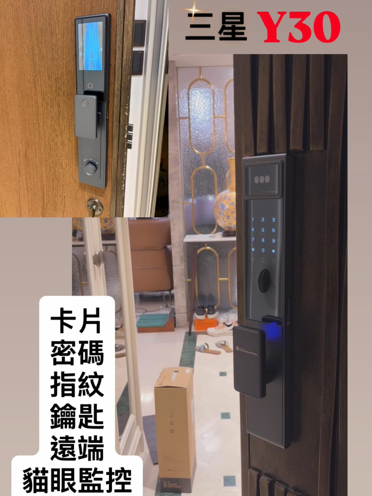

超越指紋的終極解鎖方案。搭載隔空掌靜脈與 3D 人臉辨識，
並具備 IP54 防塵防水等級，為透天豪宅打造無懼風雨的科技門面。
Product View
不想脫口罩？手指乾燥脫皮刷不過？SY30MAX 提供「刷臉」與「刷掌」雙重非接觸式開門選擇，辨識率與衛生性同步升級。

為什麼 SY30MAX 是透天與長輩的最愛？因為它解決了「指紋刷不過」與「怕水淋」的兩大難題。
Samsung SY30MAX 集掌靜脈、3D 人臉與 IP54 防水於一身，不僅辨識更精準，更能適應台灣多變的氣候環境。
透過紅外線掃描手掌皮下靜脈血管紋路，辨識率不受表皮指紋磨損或髒污影響。手掌距離面板 10-15cm 即可感應，實現零接觸衛生開門。
商用級 3D 結構光技術，能判斷臉部深度與立體特徵，有效防止平面照片、影片或面具破解。雷達感應自動喚醒，走近即開。
針對透天厝與半戶外環境優化，強化外殼密封性與電路板防護塗層，有效抵禦雨水潑濺與灰塵侵入，延長電子鎖使用壽命。
內建廣角鏡頭與 4 吋室內螢幕。訪客按鈴時推播手機 App，可進行雙向視訊通話，或透過變聲功能保護隱私。
Installation matters
強匠技師針對 SY30MAX 的戶外安裝場景，特別強化防水檢測與防護：確認雨遮深度、加強背板防水膠條密合度、並檢查門縫是否易滲水，確保電子鎖長期穩定運作。
確認安裝位置是否有足夠雨遮，評估日曬雨淋程度，必要時建議加裝防水罩。
安裝時確保防水墊片緊密貼合，並在鎖體與門板接縫處進行細部防水處理。
協助錄入掌靜脈與人臉資料，並教導如何調整鏡頭抓拍靈敏度與 App 通知。
累積豐富的透天與戶外電子鎖安裝經驗，我們知道如何對抗台灣的潮濕氣候。

特色：IP54 防水加強 / 掌靜脈秒速解鎖。專為戶外環境進行背板防水處理。

特色：3D 人臉辨識 / 4 吋室內螢幕。長輩、小孩輕鬆操作不費心。
聽聽高雄客戶的真實使用體驗
"我的手以前做水泥工，指紋都磨平了，以前買的電子鎖都要按好幾次才開，很氣人。這款用掌靜脈真的好用，手伸過去不用碰到就開了，完全沒有辨識不到的問題！"
"這款有IP54 防水我很滿意，因為我家大門只有一個小雨遮，下大雨會潑到。用了半年多都沒問題，而且人臉辨識也很快，車停好走過去門就開了，很方便。"
"原本以為掌靜脈是噱頭，結果用過就回不去。手濕濕的或是剛噴完酒精都能開，比指紋穩太多了。加上有視訊鏡頭，小朋友在家也能先看清楚是誰再開門，很安心。"
這些問題在安裝前先釐清，會讓您更清楚這把鎖能幫您做什麼、不能做什麼。
| 產品型號 | Samsung SY30MAX |
|---|---|
| 雙生物特徵 | 掌靜脈 (Palm Vein) + 3D 人臉識別 |
| 防護等級 | IP54 防塵防水（適合半戶外/透天） |
| 核心功能 | 掌靜脈、人臉、指紋、密碼、卡片、鑰匙、視訊對講 |
| 螢幕規格 | 4 吋 IPS 高清室內螢幕 |
| 鎖體類型 | 全自動電子鎖體（關門自動上鎖） |
| 適用門厚 | 40-120mm（依版本而異，請先評估） |
| 電源供應 | 5000mAh 可充電鋰電池（Type-C 緊急供電） |
| 容量規格 | 人臉 50 組 / 掌靜脈 50 組 / 指紋 100 組 |
| 強匠服務 | 免費環境防水評估、SOP 安裝、App 設定教學、售後支援 |
📸 3 步驟免費到府丈量
拍攝門扇正面、側面、門框近照 → 傳送至 LINE → 強匠師傅線上判斷安裝可行性
💡 熟悉高雄各大樓/透天門型，精準預估安裝費用與工期
追蹤強匠，即時掌握優惠
查看更多安裝實例與開鎖救援故事
Facebook 粉絲團
掌握最新電子鎖優惠、即時救援案例分享
前往電子鎖體驗館Instagram Reels
觀看安裝短片與實際操作展示
追蹤 IG 動態